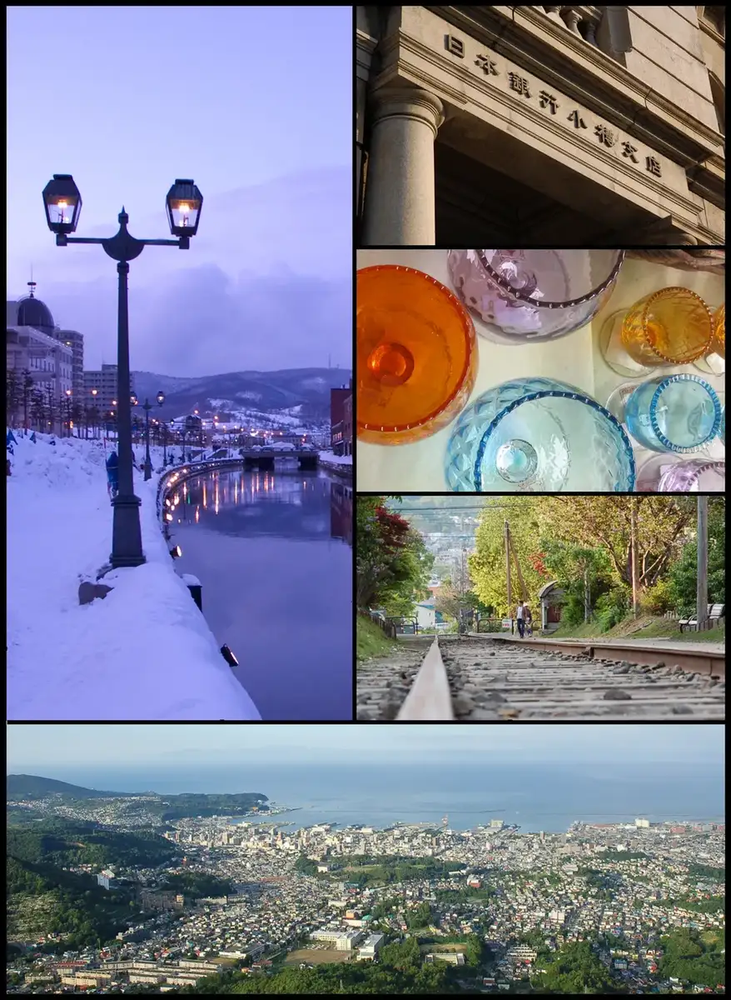
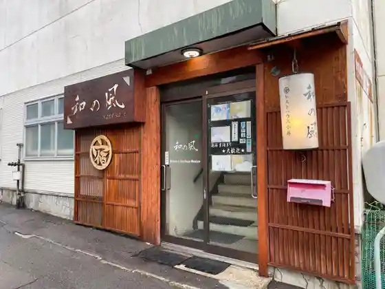
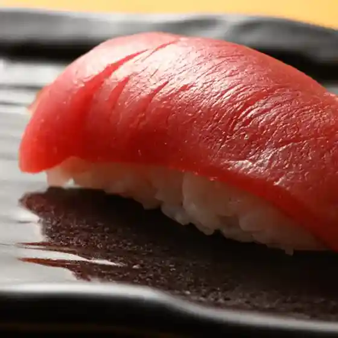

Japan / Hokkaido / Otaru
Otaru · Hokkaido
Otaru
Highlighted on the Hokkaido map.

Otaru City Hall


Places to eat · Places to stay
Nearby in Hokkaido: ← Oshamanbe · Otobe →
Other towns: Abashiri · Abira · Aibetsu · Akabira · Akaigawa · Akkeshi · Asahikawa · Ashibetsu · Ashoro · Assabu · Atsuma · Betsukai · Bibai · Biei · Bifuka · Bihoro · Biratori · Chippubetsu · Chitose · Dateshi · Ebetsu · Enbetsu · Engaru · Eniwa · Erimo · Esashi · Esashi · Fukagawa · Fukushimacho · Furano · Furubira · Haboro · Hakodate · Hamanaka · Hamatonbetsu · Hidakacho · Higashikagura · Higashikawa · Hiroo · Hokuryu · Hokutoshi · Honbetsu · Horokanai · Horonobe · Ikedacho · Imakane · Ishikari · Iwamizawa · Iwanai · Kamifurano · Kamikawacho · Kaminokuni · Kamishihoro · Kamisunagawa · Kamoenai · Kenbuchi · Kikonai · Kimobetsu · Kitahiroshima · Kitami · Kiyosatocho · Koshimizu · Kunneppu · Kuriyama · Kuromatsunai · Kushiro · Kushirocho · Kutchan · Kyogoku · Kyowacho · Makkari · Makubetsu · Mashike · Matsumae · Memuro · Mikasa · Minamifurano · Monbetsu · Moricho · Moseushi · Mukawa · Muroran · Naganuma · Naie · Nakafurano · Nakagawamachi · Nakasatsunai · Nakashibetsu · Nakatonbetsu · Nanae · Nanporo · Nayoro · Nemuro · Niikappu · Niki · Niseko · Nishiokoppe · Noboribetsu · Numatacho · Obihiro · Obira · Oketo · Okoppe · Okushiri · Omu · Oshamanbe · Otobe · Otofuke · Otoineppu · Ozora · Pippu · Rankoshi · Rausu · Rebun · Rikubetsu · Rishiri · Rishirifuji · Rumoi · Rusutsu · Samani · Sapporo · Sarabetsu · Saroma · Sarufutsu · Setana · Shakotan · Shari · Shibecha · Shibetsu · Shibetsucho · Shihoro · Shikabe · Shikaoi · Shimamaki · Shimizucho · Shimokawa · Shimukappu · Shinhidaka · Shinshinotsu · Shintoku · Shintotsukawa · Shiranuka · Shiraoi · Shiriuchi · Shosanbetsu · Sobetsu · Sunagawa · Suttsu · Taiki · Takasu · Takikawa · Takinoue · Teshikaga · Teshio · Tobetsu · Toma · Tomakomai · Tomamae · Tomari · Toyako · Toyokoro · Toyotomi · Toyoura · Tsubetsu · Tsukigata · Tsurui · Urahoro · Urakawa · Urausu · Uryu · Utashinai · Wakkanai · Wassamu · Yakumo · Yoichi · Yubari · Yubetsu · Yuni
All towns in Hokkaido · Back to all prefectures